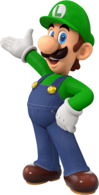
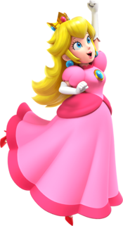
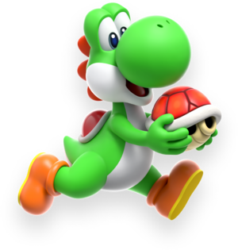

Meet Mario Friends
Here are some of Mario's most notable friends and their basic characteristics

Luigi
Mario's youmger brother. He's taller and thinner than Mario, often depicted as more cautious and timid but very brave when its counts. He wears a green hat and overalls.

Princess Peach
The ruler of the Mushroom Kingdom, Known for her kindness, grace, and leadership. Often the damsel in distress but also takes an active role in various adventures.

Yoshi
A friendl dinosaur who helps Mario by giving him rides and using his tongue to eat enemies and obstacles. Known for his loyalty and cheerful demeanor./p>